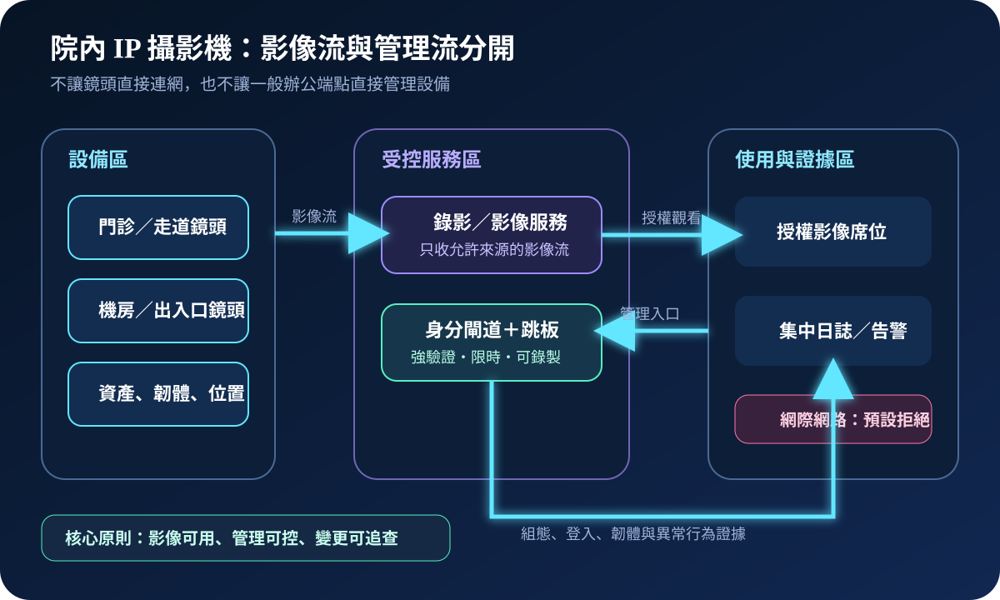
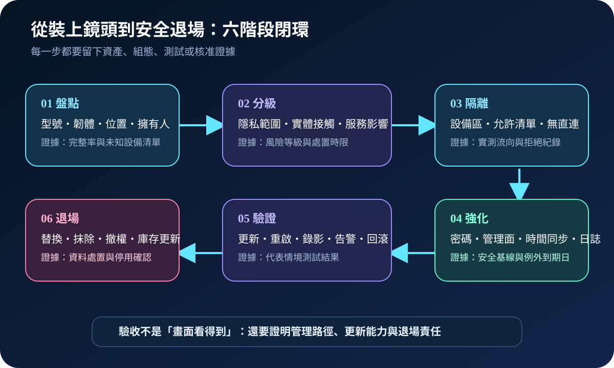
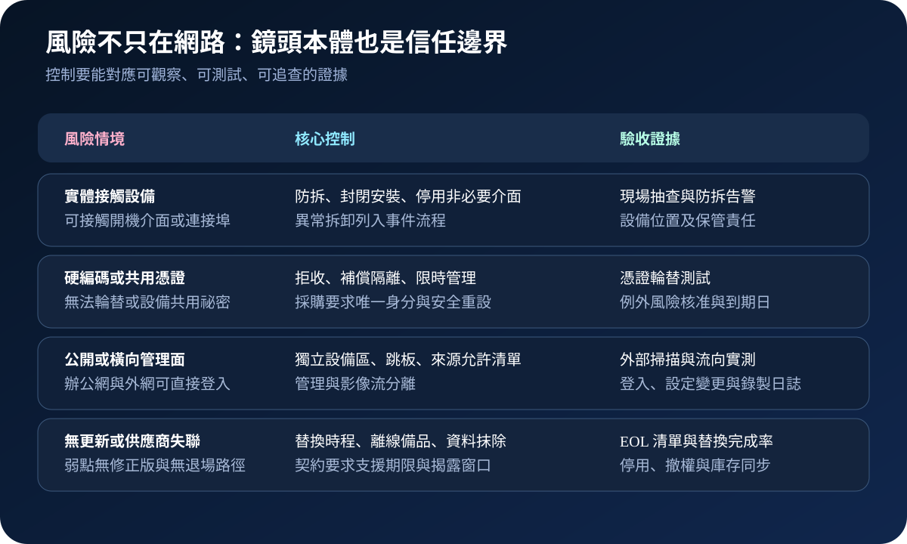

醫療資安國際觀察 · 2026-09-13
院內 IP 攝影機如何避免變成進站點：從實體存取到安全退場
作者：Dr. William｜醫療資訊與資安治理實務工作者
院內攝影機承載人員動線、設施與事件影像，又常分散在可接觸位置。安全治理不能只確認「畫面看得到」，還要限制設備本體、管理入口、影像去向與停止支援後的退場路徑。
名詞解釋：硬編碼憑證與設備信任邊界
硬編碼憑證是寫在韌體、開機載入程式或程式碼中的固定帳密，使用者可能無法輪替。管理面負責設定、韌體更新與帳號；影像面負責串流及錄影。兩者分開，可防止能觀看影像的席位同時取得設備管理能力。實體存取則涵蓋接觸鏡頭、記憶卡、序列埠或開機介面的機會。
國際現況與適用邊界
美國 CISA 於 2026 年 9 月 8 日發布 CareCam Pro IP Cameras 通報。特定 ANJIA AJL33PC0801 韌體的開機載入程式使用硬編碼憑證；具實體接觸能力的攻擊者可能取得特權開機存取，修改韌體與系統組態，甚至完全控制設備。通報列出 CVE-2026-85083，CVSS v4.0 為 7.0，並指出供應商未回應協調；發布時未接獲公開利用報告，且該弱點不能從遠端直接利用。
法域與效力：CISA 通報針對特定產品版本，關鍵基礎設施分類為商業設施，不代表所有攝影機都有相同弱點，也不是台灣醫院的法定期限。NIST IoT 基線與英國 NCSC 裝置指引屬風險管理參考。台灣機構仍須依實際型號、部署、隱私影響、臨床與設施用途、本地規範及供應商資訊決定處置。
規劃：把鏡頭納入正式設備生命週期
範圍應包含鏡頭、錄影主機、影像管理平台、行動 App、雲端中繼、交換器與維運帳號。設施或保全單位負責位置及用途；資訊單位負責網路與平台；資安單位驗證曝險、身分及日誌；採購單位確認支援期限、弱點聯絡與資料處置；隱私權責單位確認拍攝範圍及保存。驗收指標可包含資產與韌體完整率、外網曝險數、共用帳號數、日誌覆蓋率、更新測試完成率及停止支援設備替換率。

實作：先封住路徑，再處理不可修補設備
- 辨識：以網路發現與現場清冊比對型號、韌體、MAC、位置、用途、擁有人及支援狀態。
- 隔離：將攝影機放入獨立設備區，只允許流向指定錄影、時間同步、名稱解析與管理服務；預設禁止直連網際網路及辦公端點。
- 收斂管理：停用非必要服務與雲端中繼，使用唯一帳號、強驗證、限時跳板及來源允許清單，集中保存登入與組態變更。
- 降低實體風險：封閉非必要連接埠，採防拆安裝；拆卸、重設或韌體模式啟動應觸發盤點與事件檢查。
- 分批驗證：先在代表性設備測試更新、重啟、錄影、時間戳、告警及回滾，再依區域分批部署。
- 補償與退場：無修正版或無法輪替憑證者提高隔離與監測，設定風險例外到期日；到期前完成替換、資料抹除、撤權與庫存更新。
風險：掃不到外網，不等於設備可信
只有外部掃描會漏掉實體存取與內部橫向路徑；只改 Web 密碼也無法消除寫在開機層的固定憑證。封鎖過度則可能中斷錄影、時間同步或事件調閱。每項控制需以實際流量、代表性功能與失敗情境驗證，並區分「暫時降低風險」與「根因已消除」。供應商失聯或無支援時，補償控制必須連結明確退場日期。

可執行清單
- 是否能列出每支鏡頭的型號、韌體、位置、用途、擁有人與支援期限？
- 影像流與管理流是否分開，且沒有攝影機直接暴露網際網路？
- 是否驗證過預設、共用及硬編碼憑證，而非只更改 Web 密碼？
- 管理登入、韌體更新、組態變更、重設與拆卸是否可追查？
- 更新後是否測試錄影、時間戳、事件調閱、告警與回滾？
- 無法修補設備是否有補償控制、核准到期日與替換計畫？
來源
- CISA｜CareCam Pro IP Cameras（ICSA-26-251-01）（發布：2026-09-08；查閱：2026-09-13）
- NIST｜IR 8259A：IoT Device Cybersecurity Capability Core Baseline（發布：2020-05；查閱：2026-09-13）
- UK NCSC｜Device security guidance（查閱：2026-09-13）
內容說明
本文依健康台灣深耕計畫相關治理內容整理，並參考 CISA、NIST 與英國 NCSC 公開資料，提出台灣醫療機構可採用的攝影機信任邊界、生命週期與驗收方法；不取代主管機關公告、法律意見、產品文件、隱私評估或個案風險判斷。